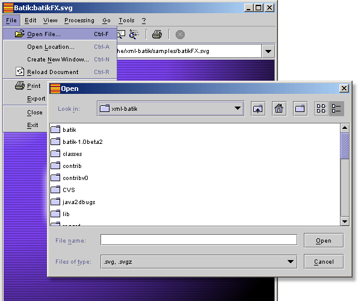
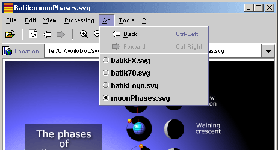
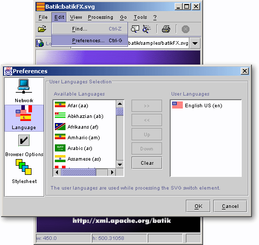
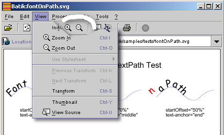
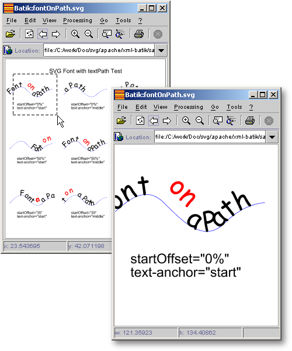
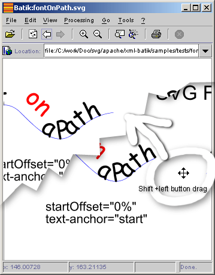
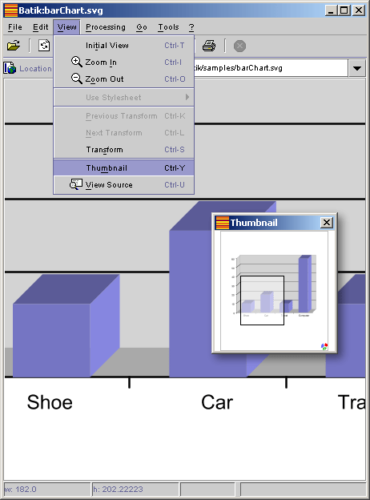

|
|
This page describes the main features of Squiggle the SVG browser that comes with Batik.
It discusses the following:
|
|
The method for starting the browser depends on the distribution of Batik
that you chose to download. The following describes how to start the browser
for each distribution(binary distribution and
source distribution)
 |  |  | | Starting the browser for the binary distribution | |  | |  |
|
If you downloaded the binary distribution
of Batik, you should have
gotten a file called batik-1.5beta3.zip, which, when expanded,
created a batik-squiggle.jar file. To start the browser,
type the following on the command line:
cd <installationDirectory>
java -jar batik-squiggle.jar
You can pass options to the command line:
java -jar batik-squiggle.jar [ -font-size <fontSize>] [svgURL]*
Where:
- -font-size <fontSize> will make the browser use small fonts in the GUI.
- [svgURL]* the URLs for the SVG files the browser should open when it starts
For example:
java -jar batik-squiggle.jar -font-size 10 starts the browser with small fonts.java -jar batik-squiggle.jar -font-size 10 samples/batikLogo.svg starts the browser with
the batikLogo.svg file open and small fonts,
because of -font-size
|
| | | | Starting the browser for the source distribution | | | | |
|
If you downloaded the source distribution
of Batik, you should have gotten
a zip file batik-src-1.5beta3 that expanded into a directory called xml-batik. In that directory, you
can find build scripts for the platform you are running on. For example, there is
a build.bat script for users of the Windows platform and there is a build.sh script
for UNIX users.
To start the browser you should:
- Make sure the
xml-batik directory is in your PATH environment variable
- Make sure the
ANT_HOME environment variable is set to the xml-batik directory
- Make sure that your
JAVA_HOME environment variable is set to your JDK installation
directory
- Open a command line window and go to the
xml-batik directory where the Batik
distribution was expanded
- At the command prompt, type:
Windows: build squiggle
UNIX: build.sh squiggle
This will start the browser
You can pass options to the browser as follows:
Windows: build squiggle [-font-size <fontSize>] [svgURL]*
UNIX: build.sh squiggle [-font-size <fontSize>] [svgURL]*
Refer to "Starting the browser for the binary distribution" for an explanation of these
options.
Note: that the number of files which can be opened on Windows, from the command line is
limited because batch files take at most 9 parameters.
|
|
|
The browser has several features to view and browse SVG
documents:
|
In situations where you want to open SVG files locally
on the machine where you are running Squiggle, you can use
"File->Open File" menu item to open
that file, or use the "Ctrl-F" key
accelerator. Doing so brings up a file choser that lets
you select the file you want to view.

|
|
As with HTML content, it is common to navigate back and
forth between SVG files (remember that SVG files contain
hyperlinks, just like HTML does) and, as described later
in this document, it is possible to zoom into SVG documents, pan and rotate.

Squiggle, the SVG browser, offers multiple features to
help you browse SVG files:
- Navigating between files. The
"Go->Back" menu item (or the
Ctrl-left arrow keyboard
acceleration) and the
"Go->Forward" (or the
Ctrl-right arrow keyboard
acceleration) let you move to the previous and next
visited SVG documents
- History. The
"Go" menu also contains a list of the
visited SVG documents, which gives you a way to
randomly access any document you have already
visited.
- Navigation between views. The
"View->Previous Transform" menu
item (Ctrl-k) and the
"View->Next Transform" menu item
(Ctrl-L) let you go to the previous
or next view you have had of a document. This is
useful when, for example, you pan or rotate and document and want
to go back to any previous view you had of the
document (i.e., before you panned or rotated it).
|
|
|
The "Edit->Preferences" menu item or
Ctrl-Gbrings up the dialog box shown in the
following figure.

This dialog contains several types of options, which can be selected with
the left-hand side list. For each type of option, a panel lets you configure various
browser parameters:
- Network Options Panel. This panel
lets you configure the proxy server to use if you are
working from behind a firewall.
- Languages Panel. This is the panel
shown in the above figure. That panel lets you select your
languages. The user language can be used in SVG documents
to choose between alternate contents. For example, open
the samples/moonPhases.svg example. Then, change the user
language to french and reload the document
(Ctrl-R). You will see that the text is
now displayed in french. You can do the same with Japanese
and the text will be shown in Japanes.
- Browser Options Panel. This panel
lets you choose some optional behaviors:
- Show Rendering. When on, the
browser will update the canvas while processing an
SVG document. This turns on progressive
rendering.
- Auto Adjust Window. When on,
the browser window is resized to fit any newly
loaded document
- Enable Double Buffering. When
on, the browser uses additional memory resources
which improves the quality of effects such as
zooming and panning.
- Show debug traces. When on,
so debug messages will be printed to the standard
output. This is only for developers.
- Stylesheet Panel. This panel lets you
specify a user stylesheet which can override some of the
default settings in viewed SVG documents. This might be
useful if you want, for example, to override the font size
used in text elements.
|
| | | | Navigating SVG documents: Zooming, panning, rotating, transform and thumbnail | | | | |
|
The Batik browser offers multiple way to navigate SVG documents:
|
There are several methods to zoom in or out an SVG Document:
- You can select the View -> Zoom
In or View -> Zoom
Out menu item
- You can click on the
"Zoom In/Out" tool bar button
(the ones that show a magnifying glass with a
"+/-" signs)
- You can use the "Ctrl+I" and
"Ctrl+O" keyboard
acceleration
- If the mouse is over the document in the
display area, you can press the Ctrl
key then click the left mouse
button and drag to select the area of
interest in the document. This can only be
used to zoom into a document.
- If the mouse is over the document in the
display area, you can press the Shift
key then click the right
mouse button and drag it. This is
called the 'real time' zoom and can
be used both for zooming in and out.


|
|
Some documents are too big to fit into the browser,
especially when you zoom in with a large zoom
factor. In these circumstances, it is usefull to be
able to 'move around' the document and pan to view
different parts of the documents. Again, there are
multiple ways to do this:
- With the mouse cursor over the SVG document,
press the Shift key and then
click and drag the left mouse
button to a new location. When you
release the mouse, the document will be translated
to the new mouse location.
- If you have the thumbnail open, you can
select the marker showing the current area of
interest and move it to the desired location

|
|
It is sometimes useful to be able to rotate a
document (maps for example). You can do this in the
Batik browser by first pressing the Ctrl
key and then clicking and dragging
the right mouse button to a new location. The
browser will dynamically rotate the image as you move
your cursor. When you are satisfied with that angle,
you can release the mouse button and the document will
be displayed with that new angle.
|
|
Panning in the document window can be difficult
after you have zoomed into a document because you
cannot see the whole document. Panning on large
documents (or with a large zoom factor) is made easy
by the thumbnail that you can bring up through the
"View -> Thumbnail" menu item or
Ctrl-Y keyboard acceleration. The
thumbnail shows a rectangular marker that represents
the "Area of Interest", i.e., the region currently
displayed in the window (the visible portion of the
document). You can drag out a rectangular
marker with the left mouse button pushed down
to select a new area of interest which will then be
shown in the main window.

|
|
|
|